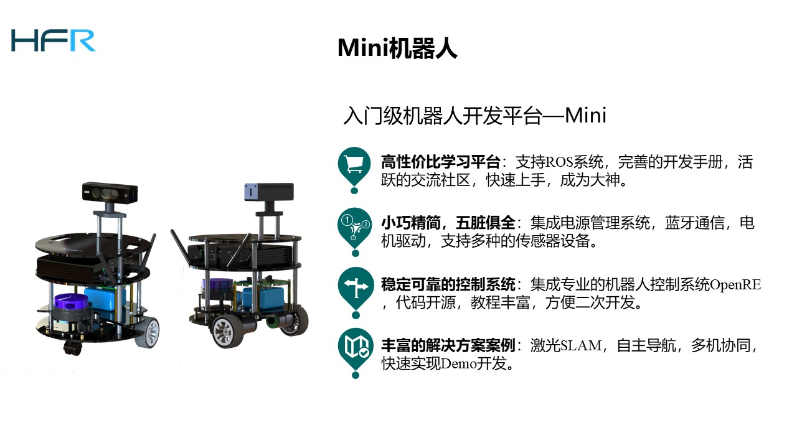

1. Mini机器人
1.1. 概述
轻小灵动，游刃有余

小身形，多功能。高集成度多功能控制器、强劲续航动力、完善的开发教程，让你以最低的成本快速入门机器人开发学习。
1.2. 外形及性能参数

1.3. 设计特点

Mini是一款采用前万向后差速底盘布局的小型机器人开发平台。其主体结构由四层超高强度哑黑E-CR玻纤板和九根高强度亮银铝柱组成，使得只有书本大小的它拥有6Kg的载重能力。Mini搭载了基于32位STM32F103芯片的多功能控制器，在方寸之间集成了电源管理系统、蓝牙模块、电机驱动和六轴惯性传感器；5800mAh的高品质防爆聚合物锂电子电池和两个7.5W的电机赋予了Mini出色的运动能力。一如既往，Mini传承了HFR机器人系列高通用化、高拓展性的血统，可支持多款主流的激光雷达、单板计算机、RGBD摄像头，能运行HFR的任何软件，同时也支持OpenRE机器人库和ROS系统，配合完善的开发手册和活跃的交流社区，使用户能快速上手。娇小的体型并导致性能上的任何压缩，反而赋予了它非比寻常的灵活性和可亲的价格，Mini是初学入门和多机集群研究的不二之选。
1.4. 套餐价格
| Mini 套餐 | 属性 | 价格(不带发票) |
|---|---|---|
基础版 |
1. 机械结构 2. 控制电路，电源电路，配套开发调试硬件，电池套装x1 3. 技术手册，社区支持，技术交流和指导 (不提供免费教学培训) |
1998 RMB |
| 导航开发版 | 1. 基础版全部内容 2. Intel Atom 4核4GB/32GB (可跑Rviz 和Stage) 3. rplidar a1(激光雷达) |
3698 RMB |
视觉开发版(推荐) |
1. 导航开发版全部内容 2. 微软Kinect1 |
4498 RMB |
视觉增强版 |
1. 基础版全部内容 2. 酷睿i3 4G/64G SSD控机 + rplidar a1(激光雷达) 3. 微软Kinect1 |
5498 RMB |
1.5. 实验演示
Mini小巧玲珑，售价底，适合学生入门和用于研究多机器人协同。然而Mini虽然小，却五脏俱全，在移动，建图，导航，避障方面的效果并不会比Stone 和 Giraffe 差，只是载重小，不能放机械臂，PC，这样就限制了机器人其他方面的研究，所以需要更高平台需求的可以看Stone和Giraffe
1.5.1. 基于深度强化学习的多机器人去中心化避障实验 by Dorabot
去中心化的多机器人避障（decentralized multi-robot collision avoidance） 目标在与多机器人系统在没有中心服务器规划，甚至机器人间没有通讯的情况下，也能拥有高效， 无震荡（Oscillation-Free）机器人避障行为。可以类比在拥挤的街道上行走的人们。基于handsfree 我们构建了完善的实验平台，在我们的实验中，handsfree极大减少了底层开发的难度，加速了我们实物机器人实验进程。